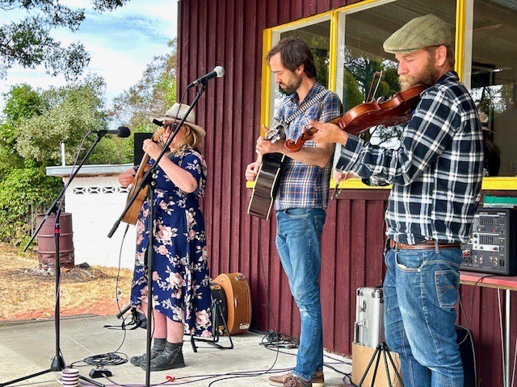

Music
ARTISTS - MUSIC - WORKSHOPS - SPONSORS - WEEKEND ACTIVITIES - VOLUNTEERS
Huon and Kingston FM are proud to be in collaboration with The Castle Forbes Bay Art and Music Exhibition.
With our extensive musical knowledge and reach in our community we aim to bring an exciting and interesting range of local musical artists to entertain the visitors for the whole weekend.
So far we have confirmed the ukulele band The Thugs , we have Blues favourites Kate Meehan and Skip, The a capella group Little boat Choir , Mark and Wendy with their soft rock , Andrew Ellis and Band with their take on some well known standards, hopefully the amazing sea shanty singers The Stranded Wailers and so many more to be announced when confirmed.
